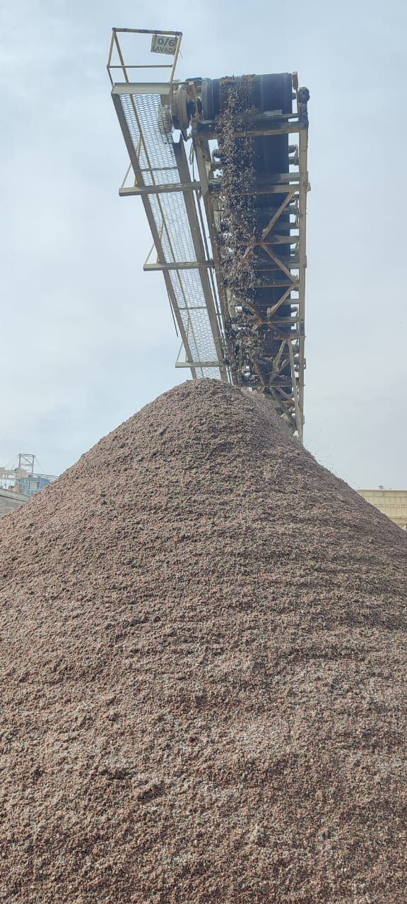
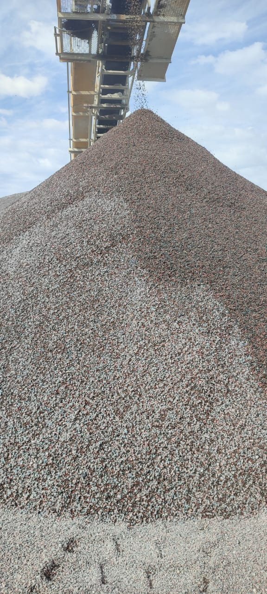
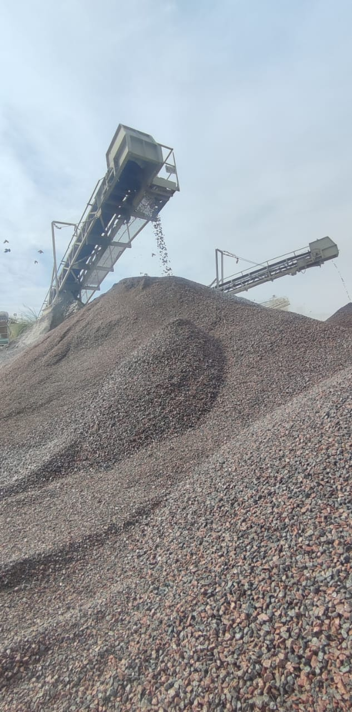
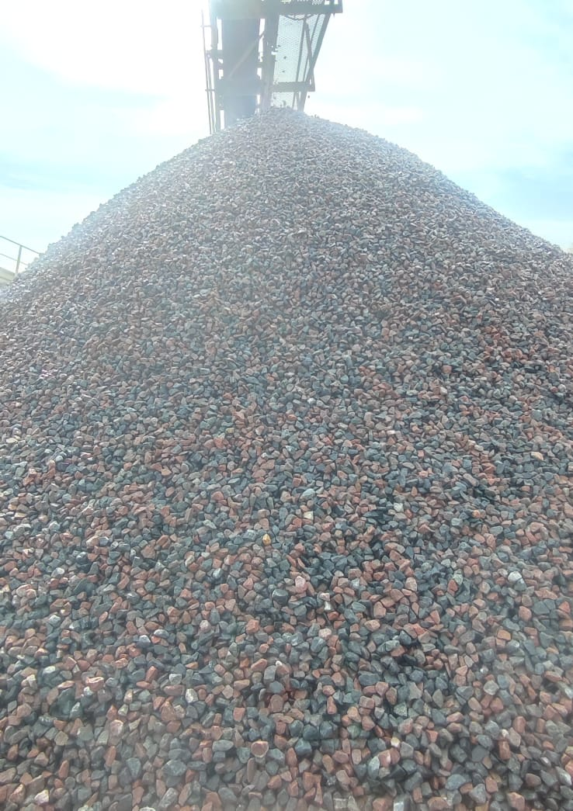

Presentación
A.GUERRICO S.A se dedica a la extracción, elaboración y distribución de granito triturado, con una producción mensual de 300,000 toneladas en sus canteras Villa Monica y Puma. Ofrecemos materia prima de alta calidad, tanto en productos secos como lavados.
Productos
Productos Secos
Productos Lavados
-  0/6 lavada
-  6/12 lavada
-  6/22 lavada
-  15/32 lavada
Contacto
Para más información, por favor no dude en contactarnos.